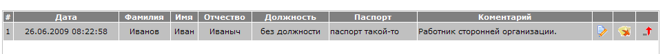
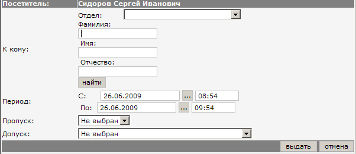
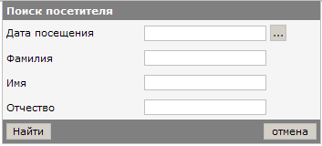
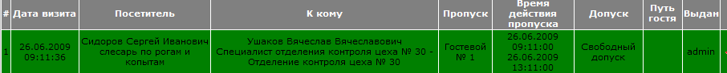
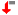
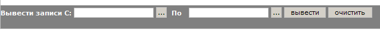

Журнал посетителей (см. изображение) содержит информацию о лицах, которые проходили на территорию предприятия по гостевому пропуску. Данные личности не имеют постоянного пропуска. Проход осуществляется с помощью гостевого пропуска. 
Для того, чтобы выдать посетителю гостевой пропуск,
необходимо найти посетителя с помощью поиска или создать нового посетителя.
Что бы создать посетителя - нажмите на кнопку
Далее нужно будет заполнить форму посетителя:

После того, как Вы введёте данные о посетителе, нажмите кнопку "Сохранить". После подтверждении о
сохранение Вы перейдёте к списку посетителей, где будет только что добавленный Вами посетитель.
Для выдачи ему пропуска - нажмите на кнопку появится окошко
с формой которую нужно заполнить:

После заполнения - нажмите на кнопку "Выдать". На этом операция выдачи пропуска закончена.
Если посетитель уже приходил и Вы его зарегистрировали, можно не заводить его еще раз, а найти в списке.
Чтобы найти посетителя - нажмите кнопку поиска
внизу списка. Отобразится форма поиска.

Введите известные Вам данные о посетителе и нажмите кнопку "Найти".
Если посетитель был найден, то произведите операцию выдачи пропуска, как описано выше.
После того, как посетителю был выдан пропуск, посетитель отображается в журнале посещений.

Зелёный цвет означает то что посетитель находится на территории предприятия и пропуск у него
ещё не отобран. В противном случае зелёной подсветки нет.
Пропуск отбирается после выхода сотрудника с территории предприятия. Для того, чтобы отобрать
пропуск нажмите на кнопку 
Если Вы хотите просмотреть посещения, внизу списка укажите интервал дат, за которые вы хотите просмотреть
данные.
